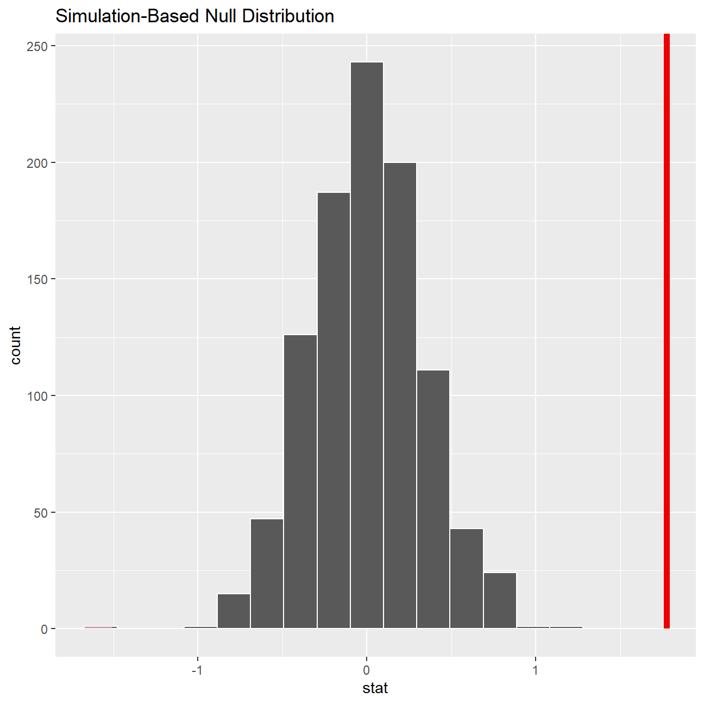

Every two years, the Centers for Disease Control and Prevention conduct the Youth Risk Behavior Surveillance System (YRBSS) survey, where it takes data from high schoolers (9th through 12th grade), to analyze health patterns. We selected group of variables from a random sample of observations during one of the years the YRBSS was conducted.
data(yrbss)
glimpse(yrbss)## Rows: 13,583
## Columns: 13
## $ age <int> 14, 14, 15, 15, 15, 15, 15, 14, 15, 15, 15...
## $ gender <chr> "female", "female", "female", "female", "f...
## $ grade <chr> "9", "9", "9", "9", "9", "9", "9", "9", "9...
## $ hispanic <chr> "not", "not", "hispanic", "not", "not", "n...
## $ race <chr> "Black or African American", "Black or Afr...
## $ height <dbl> NA, NA, 1.73, 1.60, 1.50, 1.57, 1.65, 1.88...
## $ weight <dbl> NA, NA, 84.4, 55.8, 46.7, 67.1, 131.5, 71....
## $ helmet_12m <chr> "never", "never", "never", "never", "did n...
## $ text_while_driving_30d <chr> "0", NA, "30", "0", "did not drive", "did ...
## $ physically_active_7d <int> 4, 2, 7, 0, 2, 1, 4, 4, 5, 0, 0, 0, 4, 7, ...
## $ hours_tv_per_school_day <chr> "5+", "5+", "5+", "2", "3", "5+", "5+", "5...
## $ strength_training_7d <int> 0, 0, 0, 0, 1, 0, 2, 0, 3, 0, 3, 0, 0, 7, ...
## $ school_night_hours_sleep <chr> "8", "6", "<5", "6", "9", "8", "9", "6", "...# skimming data
skim(yrbss)| Name | yrbss |
| Number of rows | 13583 |
| Number of columns | 13 |
| _______________________ | |
| Column type frequency: | |
| character | 8 |
| numeric | 5 |
| ________________________ | |
| Group variables | None |
Variable type: character
| skim_variable | n_missing | complete_rate | min | max | empty | n_unique | whitespace |
|---|---|---|---|---|---|---|---|
| gender | 12 | 1.00 | 4 | 6 | 0 | 2 | 0 |
| grade | 79 | 0.99 | 1 | 5 | 0 | 5 | 0 |
| hispanic | 231 | 0.98 | 3 | 8 | 0 | 2 | 0 |
| race | 2805 | 0.79 | 5 | 41 | 0 | 5 | 0 |
| helmet_12m | 311 | 0.98 | 5 | 12 | 0 | 6 | 0 |
| text_while_driving_30d | 918 | 0.93 | 1 | 13 | 0 | 8 | 0 |
| hours_tv_per_school_day | 338 | 0.98 | 1 | 12 | 0 | 7 | 0 |
| school_night_hours_sleep | 1248 | 0.91 | 1 | 3 | 0 | 7 | 0 |
Variable type: numeric
| skim_variable | n_missing | complete_rate | mean | sd | p0 | p25 | p50 | p75 | p100 | hist |
|---|---|---|---|---|---|---|---|---|---|---|
| age | 77 | 0.99 | 16.16 | 1.26 | 12.00 | 15.0 | 16.00 | 17.00 | 18.00 | ▁▂▅▅▇ |
| height | 1004 | 0.93 | 1.69 | 0.10 | 1.27 | 1.6 | 1.68 | 1.78 | 2.11 | ▁▅▇▃▁ |
| weight | 1004 | 0.93 | 67.91 | 16.90 | 29.94 | 56.2 | 64.41 | 76.20 | 180.99 | ▆▇▂▁▁ |
| physically_active_7d | 273 | 0.98 | 3.90 | 2.56 | 0.00 | 2.0 | 4.00 | 7.00 | 7.00 | ▆▂▅▃▇ |
| strength_training_7d | 1176 | 0.91 | 2.95 | 2.58 | 0.00 | 0.0 | 3.00 | 5.00 | 7.00 | ▇▂▅▂▅ |
# summarizing statistics for age, height, weight, physically_active_7d, strength_training_7d
cols <- c('age', 'height', 'weight', 'physically_active_7d', 'strength_training_7d')
row_names <- c('min', 'max', 'mean', 'median', 'sd')
# Removing NAs
yrbss_cleaned <- yrbss[, cols] %>% na.omit()
summary_vals <- yrbss_cleaned %>% summarise_each(funs(min))
summary_vals <- append(summary_vals, yrbss_cleaned %>% summarise_each(funs(max)))
summary_vals <- append(summary_vals, yrbss_cleaned %>% summarise_each(funs(mean)))
summary_vals <- append(summary_vals, yrbss_cleaned %>% summarise_each(funs(median)))
summary_vals <- append(summary_vals, yrbss_cleaned %>% summarise_each(funs(sd)))
summary_matrix <- matrix(summary_vals, nrow = 5, dimnames = list(row_names, cols), byrow = TRUE)
summary_matrix## age height weight physically_active_7d strength_training_7d
## min 12 1.27 29.9 0 0
## max 18 2.11 181 7 7
## mean 16.2 1.69 67.9 3.92 2.97
## median 16 1.68 64.9 4 3
## sd 1.25 0.105 16.9 2.55 2.57# Histogram for Age
age_hist <- ggplot(yrbss_cleaned, aes(x=age)) +
geom_histogram() +
labs(title = "17 years old are the most\n numerous in the sample", subtitle = '\nAge distribution', x= "\nAge", y="Count\n") +
theme_economist()
# Histogram for height
height_hist <- ggplot(yrbss_cleaned, aes(x=height)) +
geom_histogram() +
labs(title = "Most respondents are around\n 1.7m tall", subtitle = '\nHeight distribution', x= "\nHeight", y="Count\n") +
theme_economist()
# Histogram for weight
weight_hist <- ggplot(yrbss_cleaned, aes(x=weight)) +
geom_histogram()+
labs(title = "The weight distribution is\n heavily right skewed", subtitle = '\nWeight distribution', x= "\nWeight", y="Count\n") +
theme_economist()
# Histogram for physically_active_7d
physically_active_7d_hist <- ggplot(yrbss_cleaned, aes(x=physically_active_7d)) +
geom_histogram()+
labs(title = "The respondents are \n very active or totally inactive", subtitle = '\nDaily distribution of physical activity', x= "\n# of days", y="Count\n") +
theme_economist()
# Histogram for strength_training_7d
strength_training_7d_hist <- ggplot(yrbss_cleaned, aes(x=strength_training_7d)) +
geom_histogram()+
labs(title = "The respondents don't seem\n to enjoy strength training", subtitle = '\nDaily distribution of strength training', x= "\n# of days", y="Count\n") +
theme_economist()
age_hist + height_hist + weight_hist + physically_active_7d_hist + strength_training_7d_histYou will first start with analyzing the weight of participants in kilograms. Using visualization and summary statistics, describe the distribution of weights. How many observations are we missing weights from?
yrbss_weight <- yrbss %>%
summarise(mean_weight=mean(weight, na.rm=TRUE),
sd_weight=sd(weight, na.rm=TRUE),
count=count(weight, na.rm=TRUE))
yrbss_weight## # A tibble: 1 x 3
## mean_weight sd_weight count
## <dbl> <dbl> <int>
## 1 67.9 16.9 0ggplot(yrbss, aes(x=weight)) +
geom_density() +
labs(title="Distribution of weights amongst high schoolers", x= "Weight(kg)", y="Density")Although we are missing 1,004 weight observations out of 13,583 observations, the graph clearly indicates a heavily right skewed distribution of weight amongst high schoolers.The peak is around 63kg, with a leptokurtic curve displaying a small cluster at around 115kg.
#new variable `physical_3plus`, which will be `yes` if they are physically active for at least 3 days a week, and `no` otherwise.
yrbss <- yrbss %>%
mutate(physical_3plus = ifelse(physically_active_7d >= 3, "yes", "no"),
physica_3plus_val = ifelse(physical_3plus == "no", 1, 0))
yrbss %>% filter(!is.na(physical_3plus)) %>%
group_by(physical_3plus) %>%
summarise(count = n()) %>%
mutate(prop= count/sum(count))## # A tibble: 2 x 3
## physical_3plus count prop
## <chr> <int> <dbl>
## 1 no 4404 0.331
## 2 yes 8906 0.669#95% confidence interval for the population proportion of high schools that are *NOT* active 3 or more days per week
cleaned_yrbss <- yrbss %>% filter(!is.na(physical_3plus))
ci_not_active <- cleaned_yrbss %>%
summarise(mean_pop = mean(physica_3plus_val, na.rm = TRUE),
sd_pop = sd(physica_3plus_val, na.rm = TRUE),
count_pop = n()) %>%
mutate(se_pop = sd_pop / sqrt(count_pop),
lower_ci = mean_pop - qt(1 - (0.05 / 2), count_pop - 1) * se_pop,
upper_ci = mean_pop + qt(1 - (0.05 / 2), count_pop - 1) * se_pop)
ci_not_active## # A tibble: 1 x 6
## mean_pop sd_pop count_pop se_pop lower_ci upper_ci
## <dbl> <dbl> <int> <dbl> <dbl> <dbl>
## 1 0.331 0.471 13310 0.00408 0.323 0.339Is there a relationship between these two variables? What did you expect and why?
ggplot(cleaned_yrbss, aes(x=physical_3plus, y=weight)) +
geom_boxplot() +
labs(title = "",
x = "Physical 3 Plus",
y = "Weight") +
NULLThe boxplot does not seem to show a marked weight difference between the high schoolers who are physically active more than 3 times a week and those who aren’t. We conclude there is no significant correlation for this group of schoolers between the number of times they exercise per week and their weight. Although we were expecting to see a strong positive correlation indicating that the less one exercises the more their weight increases, there actually seems to be a slight negative correlation. This shows a tendency for regular exercisers to gain weight, which probably comes from muscle mass. However, we would need to conduct further research regarding this hypothesis. In summary, weight might not be a reliable predictor of how much a person exercises and how healthy they are. Other factors such as gender or sleeping hours could be worth studying.
yrbss %>%
group_by(physical_3plus) %>%
filter(!is.na(physical_3plus)) %>%
summarise(mean_weight = mean(weight, na.rm = TRUE),
sd_weight = sd(weight, na.rm=TRUE),
count = n(),
se_weight = sd_weight/sqrt(count),
t_critical = qt(0.975, count-1),
margin_of_error = t_critical * se_weight,
lower = mean_weight - t_critical * se_weight,
upper = mean_weight + t_critical * se_weight
)## # A tibble: 2 x 9
## physical_3plus mean_weight sd_weight count se_weight t_critical
## <chr> <dbl> <dbl> <int> <dbl> <dbl>
## 1 no 66.7 17.6 4404 0.266 1.96
## 2 yes 68.4 16.5 8906 0.175 1.96
## # ... with 3 more variables: margin_of_error <dbl>, lower <dbl>, upper <dbl>There is an observed difference of about 1.77kg (68.44 - 66.67), and we notice that the two confidence intervals do not overlap. It seems that the difference is at least 95% statistically significant. Let us also conduct a hypothesis test.
t.test(weight ~ physical_3plus, data = yrbss)##
## Welch Two Sample t-test
##
## data: weight by physical_3plus
## t = -5, df = 7479, p-value = 9e-08
## alternative hypothesis: true difference in means is not equal to 0
## 95 percent confidence interval:
## -2.42 -1.12
## sample estimates:
## mean in group no mean in group yes
## 66.7 68.4inferobs_diff <- yrbss %>%
specify(weight ~ physical_3plus) %>%
calculate(stat = "diff in means", order = c("yes", "no"))#test simulation from null distribution
null_dist <- yrbss %>%
specify(weight ~ physical_3plus) %>%
hypothesize(null = "independence") %>%
generate(reps = 1000, type = "permute") %>%
calculate(stat = "diff in means", order = c("yes", "no"))
#visualization of test distribution
ggplot(data = null_dist, aes(x = stat)) +
geom_histogram()There seems to be no null permutations that have a difference of at least obs_stat.
#p-value calculation
null_dist %>% visualize() +
shade_p_value(obs_stat = obs_diff, direction = "two-sided")
null_dist %>%
get_p_value(obs_stat = obs_diff, direction = "two_sided")## # A tibble: 1 x 1
## p_value
## <dbl>
## 1 0Seeing as the p-value is below 5% at p=0, we conclude our null hypothesis can be rejected. This confirms our previous analysis that high-schooler weight and the number of times a high-schooler exercises are very likely to be unrelated.